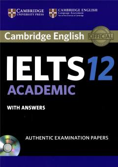

CIIELTS imtihoniga tayyorgarlik ko'rish uchun rasmiy amaliy testlar to'plami.
Ushbu kitob ingliz tilini bilish darajasini baholovchi IELTS imtihoniga tayyorgarlik ko'rish uchun mo'ljallangan rasmiy test materiallarini o'z ichiga oladi. Nashrda akademik modul bo'yicha to'rtta to'liq amaliy test, ularning javoblari va tinglash materiallari taqdim etilgan. Qo'llanma kelajakdagi nomzodlarga imtihon formati bilan tanishish va o'z bilimlarini sinovdan o'tkazish imkonini beradi.